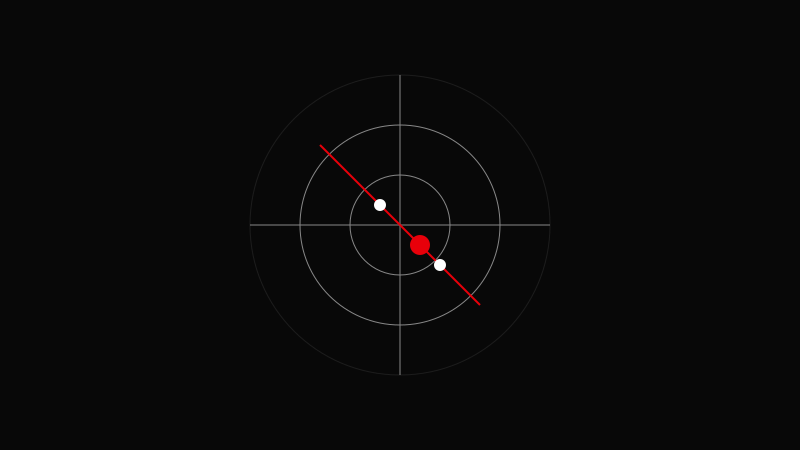

AVA CREATORS TOOLKIT · COLOR GRADING
SKIN TONE CORRECTION
Natural, Consistent, Believable
Natural, Consistent, Believable

Keep skin values aligned with the skin tone line.
Open the vectorscope and isolate the skin region.
Balance exposure before touching color.
Adjust hue and saturation in small increments.
Use qualifiers only when global adjustments fail.
Check skin under multiple lighting angles—grading for one angle can break another.
Oversaturating skin to 'make it pop'.